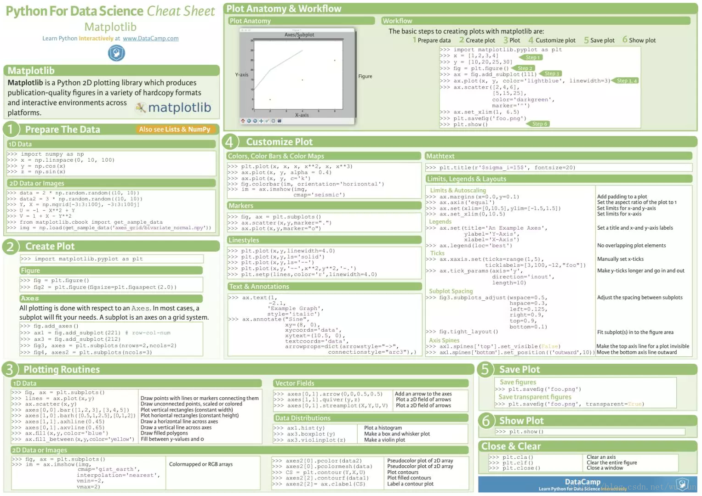

本文主要内容：
绘制折线图plt.plot
设置图片大小和分辨率plt.figure
图片保存plt.savefig
设置xy轴上的刻度和字符串xticks
解决刻度稀疏和密集的问题xticks
设置标题和xy轴的label(title,xlabel,ylabel)
文本标注text和annotate
设置字体(font_manager.fontProperties,matplotlib.rc)
在一个图上绘制多个图形(多次plot即可)
为不同的图形添加图例
导入matplotlib的pyplot模块 1 from matplotlib import pyplot as plt
图片大小设置 设置宽高及分辨率
1 plt.figure(figsize=(20 ,8 ),dpi=80 )
绘图类型 有折线图，散点图，直方图，条形图等，可参考另一篇博客Python之matplotlib常用统计图
1 2 plt.plot(x,y) plt.scatter(x,y)
坐标轴设置 设置x轴y轴的刻度及标签：xticks和yticks方法
通过控制列表的步长（间隔取值）调整刻度密集程度[::3]
1 2 _xtick_labels = [i/2 for i in range (4 ,49 )] plt.xticks(_xtick_labels[::3 ])
设置字符串与刻度一一对应，传入两个参数，分别是两个可迭代对象，数字和字符串一一一对应，只显示字符串
1 2 3 4 _xtick_labels = ["10点{}分" .format (i) for i in range (60 )] _xtick_labels += ["11点{}分" .format (i) for i in range (60 )] plt.xticks(list (x)[::3 ],_xtick_labels[::3 ],rotation = 45 ,HorizontalAlignment="left" )
坐标轴标题名称xlabel与ylabel 1 2 3 plt.xlabel("时间" ,fontproperties=my_font) plt.ylabel("温度 单位(°C)" ,fontproperties=my_font) plt.title("10点到12点每分钟的气温变化情况" ,fontproperties=my_font)
坐标轴范围：xlim与ylim 1 2 plt.xlim((1 , 10 )) plt.ylim((1 , 15 ))
线条样式 在调用plot时可指定线条颜色、风格、粗细，透明度
1 plt.plot(x,y,color='r' ,linestyle='--' ,linewidth=5 ,alpha=0.5 )
颜色字符（r红色，g绿色，b蓝色，w白色，c青色，m洋红，y黄色，k黑色，也可写全名，也可使用16进制表示）
风格字符（’-‘实线，’- - ‘虚线，’-.’点划线，’:’点虚线，’’留空，无线条）
文本标记 text()方法 必须写的参数：第一个参数是x轴坐标，第二个参数是y轴坐标，第三个参数是要显式的内容，
1 2 3 plt.text(2 , 10 , "function: y = x * x" , size = 15 , alpha=0.2 \ family = "fantasy" , color = "r" , style = "italic" , weight = "light" ,\ bbox = dict (facecolor = "r" , alpha = 0.2 ))
annotate()方法 annotate方法可以添加箭头指向来标记
1 2 3 4 5 6 7 8 9 ax = plt.subplot(111 ) t = np.arange(0.0 , 5.0 , 0.01 ) s = np.cos(2 *np.pi*t) line, = plt.plot(t, s, lw=2 ) plt.annotate('local max' , xy=(2 , 1 ), xytext=(3 , 1.5 ), arrowprops=dict (facecolor='black' , shrink=0.05 ), ) plt.ylim(-2 , 2 ) plt.show()
x轴y轴及图片标题添加 xlabel(), ylabel() 和 title() 用于在指定位置添加文本
matplotlib在任何文本表达式中接受TeX方程表达式。 matplotlib支持绘制数学公式，以$作为开始和结束符中间包含数学公式；
字符串前面的r很重要,它表示该字符串是一个原始字符串，而不是将反斜杠视为python转义。
1 2 3 4 plt.xlabel('Smarts' ) plt.ylabel('Probability' ) plt.title('Histogram of IQ' ) plt.text(60 , .025 , r'$\mu=100,\ \sigma=15$' )
绘制网格 1 2 plt.grid(alpha=0.4 ,linestyle=':' )
绘制多条曲线
多次调用plt.plot就可以，并设置曲线标签及图例
1 2 3 plt.plot(x,y_1,label="自己" ) plt.plot(x,y_2,label="同桌" ) plt.legend(prop=my_font)
添加图例 1 2 3 plt.legend(prop=my_font,loc='best' )
设置中文字体显示 matplotlib默认不支持中文字符，可以通过指定中文字体设置
查看linux/mac下面支持的字体
fc-list # 查看支持的字体
fc-list :lang=zh #查看支持的中文（冒号前有空格）
通过matplotlib.rc可以修改(windows和linux下设置字体) 1 2 3 4 5 font = {'family' : 'MicroSoft YaHei' , 'weight' : 'bold' , 'size' : 'large' } matplotlib.rc("font" ,**font) matplotlib.rc("font" ,family='MicroSoft YaHei' ,weight='bold' )
通过matplotlib下的font_manager可以解决(windows,mac和linux下设置字体) 1 2 3 4 5 from matplotlib import font_managermy_font = font_manager.FontProperties(fname="/System/Library/Fonts/PingFang.ttc" ) plt.xticks(list (x)[::3 ],_xtick_labels[::3 ],rotation=45 ,fontproperties=my_font)
图片保存
保存路径与保存格式1 plt.savefig("./sig_size.png" )
显示图片

详细说明请查看matplotlib中文文档